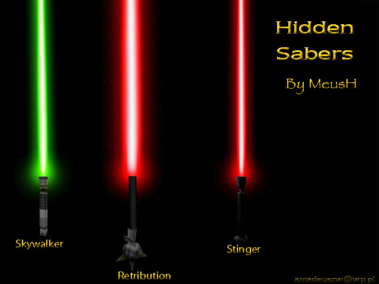

HIDDEN SABERS


HIDDEN SABERS
This mod lets You play with three hilts that were "hidden", so player couldn't select them.
After installing this mod + 3 hilts are avaible to choose
This mod includes:
Master Luke Skywalker's saber
Lord Desann's saber
Saber of reborns

Desann's saber
Luke's saber
Reborns' saber